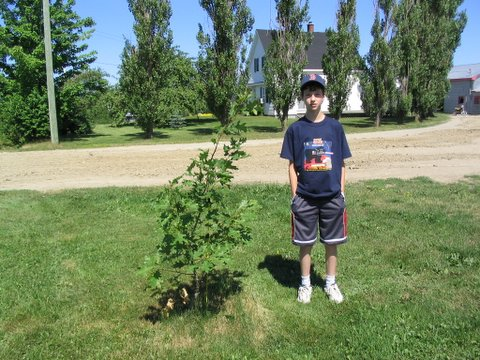

The Family Chronicle
No. 102 August 26, 2005
____________________________________________________________________
An Oak Grows on the Old Homestead

At the Glendenning family reunion in 2000, a red oak from Prince Edward Island, ,was planted at the old homestead, now the home of Norman Glendenning and family. The photo above shows the tree five years later. Standing by the tree is Jarret Glendenning, the youngest male Glendenning descended from Elmer and Jane (Watling Glendenning. Jarret is the son of Eric and Jean Glendenning and grandson of Norman and Jean Glendenning. Photo by Janet, 2005.
We went to the Exhibition yesterday and, among other things, watched a 4-H cattle judging event. A couple of things came to mind as I watched.
One of the young heifers was reluctant to participate. Each time the cows were to line up, this little black heifer balked. Tugging on the lead rope did not help. Finally, and frequently, one of the officials went over to the animal in question each time it balked, grabbed
hold of the tail at the middle and gave a twist. The animal moved along while the tail was being twisted. I remember doing that when I was training my calf.
I belonged to a 4-H club in Black River. Uncle Jim Watling, I believe, was instrumental in getting it started. I went to meetings and had a calf to care for. One year, and I may have been a member for only one year, there was a 4-H show held at St. Stephen’s Church. Uncle Jim offered to take my calf. By then, my calf wasn’t small anymore.
My calf was loaded on a truck wagon, taken to the church grounds and unloaded. I cannot remember how many animals, or people, were there. We paraded our calves under the watchful eye of the judge while making sure the calf’s head was held high, and that it stood to advantage. I got a fourth Prize – there were four entries in the class. We loaded our calves and returned home. I’m glad that it wasn’t a larger class or my standing would have been even worse.
Apparently the tornado went through Black River on Tuesday, May 17, 1932. It took the roof of James “Major” MacDonald’s barn. That is where Dad and I were at the time of the storm. Mr. Macdonald had invited Dad to put his team in the barn until the storm passes but Dad said no, he would head for home. The Gazette of May 18, 1932 reports:
“On the North side of the river another barn, that o James (Major) MacDonald had the roof taken off and was so damaged that it will have to be rebuilt”.
In the same area, a barn belonging to Uncle Uncle Jack Godfrey was moved on its foundation and a henhouse belonging to William Murdoch was blown away and his hens disappeared.
The same tornado destroyed a barn, only five years old, belonging to James Godfrey, father of George and MacK Godfrey. The barn was on the south side of the road; they later rebuilt but on the north side of the road but that barn has now been torn down. Trees were blown down in the area and the Manse and homes belonging to James and Richard Godfrey were badly damaged. Jack Gibson, who was a neighbour of James Godfrey, was battered by the gale and laid up as a result.
Thanks to Art Mils for this recollection of Life Magazine.
Hi Don;
Just remembered your reference to Life Magazine , Mothers cousin in the Boston area gave us a sub for Christmas .Mother read every word and some articles she read aloud. .I was able to gather three copies from the old house the day of the fire, May 12 1941, April 13 1942, November 17 1952. A headline in the 1941 issue "Roosevelt calls for seven-day week as U.S. Defence Machine begins to Roll" Great magazine it supplied some insight to what was going in the rest of the world. Art
And from Tina (Watling) Newton now of Boulder. Colorado. Her father, George Elbridge Watling, is, I believe, my oldest living first cousin:
Just wanted to thank you again for The Family Chronicle and congratulate you on reaching your 100th issue! And you've already moved on to 101! I know that Dad enjoys reading all of them. My husband is from a large farming family and he enjoys them, also. Dad keeps them in a binder so that he can reread them. So many of your memories are almost the same as the ones he heard from his Dad about "Skish". Is "Skish" a word that is used up there to refer to some part of Black River or Little Branch? Or maybe Grandpa invented it for us
The Chronicle is an occasional newsletter published by Don Glendenning and posted on the family website. It is intended to share information about my family, community and the times in which I grew up. While every effort is made to be accurate, errors are likely to occur. Comments, enquiries and information may be sent to 62 Queen Elizabeth Drive, Charlottetown, PEI, C1A 3A9. Tel: 902 892 5859. Email: dglende@auracom.com Web: www.glendenning.net/don